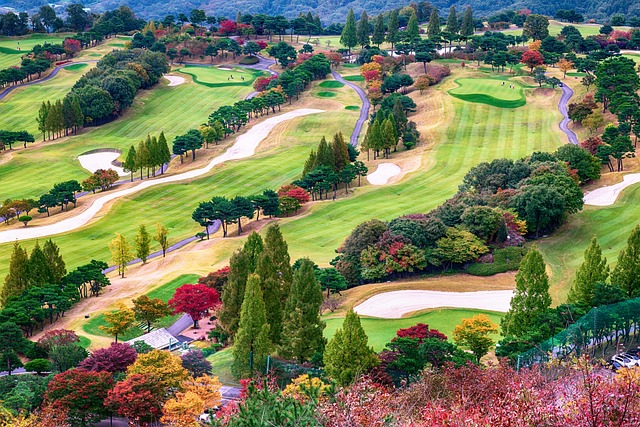

Clare Golf Club
About Us
Clare Golf Club is a picturesque golf course situated in the west of Ireland, known for its stunning views across the surrounding countryside. The club boasts an impressive 18-hole course that winds its way through rolling hills and pristine landscapes, providing golfers with an unparalleled experience. The course has been thoughtfully designed to offer challenges to players of all skill levels, with strategically placed bunkers, water hazards, and undulating greens. Whether you are a seasoned pro or a beginner, Clare Golf Club promises to provide a unique and enjoyable golfing experience. With its stunning scenery, challenging layout, and warm hospitality, Clare Golf Club is a must-visit for anyone looking for an unforgettable golfing experience in Ireland.
Our Restaurant
Clare Golf Club is not just a premier golfing destination, but it also boasts a top-notch restaurant that provides a unique dining experience. The restaurant offers a warm and welcoming atmosphere, where guests can enjoy delicious meals while taking in the beautiful views of the golf course. The menu features an array of dishes made from locally sourced ingredients, including fresh seafood, meats, and vegetables. The restaurant also caters to dietary restrictions, with vegetarian, gluten-free, and dairy-free options available. Guests can choose to dine indoors or on the terrace, which provides breathtaking views of the surrounding landscape. With its exceptional food, beautiful surroundings, and attentive service, the restaurant at Clare Golf Club is a perfect place to relax and unwind after a round of golf or to enjoy a special occasion with family and friends.

Our Members
Being a member of Clare Golf Club is more than just a membership to a golf course; it is an opportunity to be part of a vibrant community of passionate golfers. Members enjoy access to the 18-hole golf course, as well as the opportunity to participate in a range of events and tournaments throughout the year. The club also provides top-notch facilities, including a pro shop, driving range, putting green, and locker rooms. In addition to golfing benefits, membership at Clare Golf Club also includes access to the restaurant, which offers members discounts on meals and events. But most importantly, membership at Clare Golf Club offers a sense of camaraderie and connection to other like-minded individuals who share a passion for golf and the beauty of the Irish countryside. Being a member at Clare Golf Club means being part of a community of golfers who value tradition, sportsmanship, and friendship.